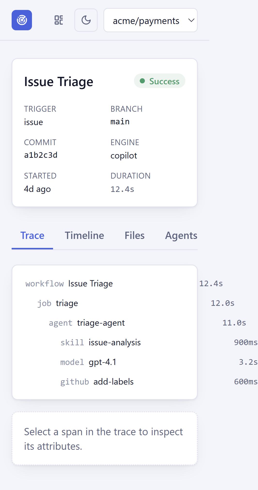

An observability app for agentic software-development workflows. A React and TypeScript frontend renders run traces, static repository discovery, and an architecture graph over a Fastify, Zod, and Prisma API.
The central question is what an agent actually did, and what evidence supports that account. A configured skill is not necessarily a loaded skill; a declared workflow is not proof of the steps a run executed.
Overview dashboard — seeded run history, success rate, and recent failures at a glance

Run detail — a workflow/job/agent/skill span tree with an evidence tag on every selected span
Evidence before presentation
Facts carry a source and a confidence level: observed, strong, inferred, or unknown. Skill usage is never collapsed into a single boolean; it is tracked as five independent facts (available, configured, loaded, referenced, execution evidence), so a skill that is configured but never observed executing shows as "Loaded: Unknown" rather than "used."
These distinctions live in the Zod domain model before they become badges or diagrams. The Run Detail trace view surfaces the same tag on every span: what kind of evidence backs this fact, and where it came from.
Definition vs. execution
The app separately tracks what a repository declares (workflows, agents, skills, instructions) and what a run actually did. A run is modeled as an OpenTelemetry-inspired span tree plus a parallel event stream, rendered as a flame-chart trace with tabs for timeline, files, agents, skills, tools, logs, metrics, GitHub activity, and drift.
Drift findings describe differences such as unexpected files, new tools, or missing expected steps. A difference is not itself evidence of intent.
Static discovery, evidence-gated relationships
A parser package walks a repository checkout for workflows, agents, SKILL.md files, instructions, prompts, hooks, and MCP server configs. Relationships between them (a workflow compiling to a lock file, an agent configuring a skill) are only recorded when backed by a concrete match; an agent referencing a skill name that doesn't resolve to a discovered file is shown explicitly as unresolved rather than silently linked.
The Architecture tab renders every discovered definition and relationship as a graph, with each connection's evidence available in a detail drawer rather than hidden behind a hover tooltip.
Current scope
Glasshouse is scoped as a self-contained demo app: a seeded acme/payments repository with workflows, agents, runs, and drift findings, plus static discovery against a repository checkout already on disk. Telemetry ingestion endpoints exist and are exercised by tests, but nothing outside of tests emits to them yet, and there is no live GitHub API integration, remote repo sync, or correlation engine merging GitHub Actions and telemetry into one run.
No production ingestion deployment or end-to-end runtime verification beyond the seeded demo is claimed here.